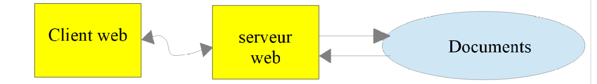
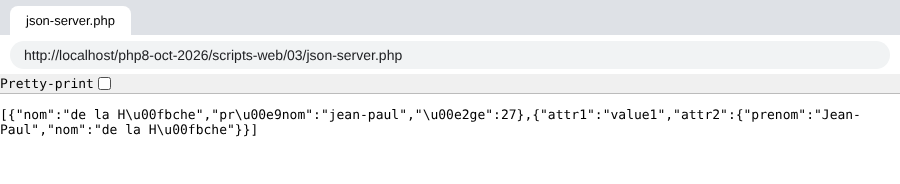

17. Web services
Note: by web service, we mean here any web application delivering raw data consumed by a client, a console script in the examples that follow. We are not interested in a particular technology, REST (REpresentational State Transfer) or SOAP (Simple Object Access Protocol) for example, which deliver data in a well-defined format: most often JSON for REST, XML for SOAP. Each of these technologies precisely describes how the client must query the server and the form the server's response must take. In this course, we will be much more flexible about the nature of the client's request and that of the server's response. However, the scripts written and the tools used are close to those of the REST technology.
17.1. Introduction
Since PHP programs can be executed by a web server, such a program becomes a server program able to serve several clients. From the client's point of view, calling a web service amounts to requesting the URL of that service. The client can be written in any language, including PHP. We also need to know how to "converse" with a web service, that is, to understand the HTTP protocol of communication between a web server and its clients. That was the purpose of the previous chapter, which introduced us to part of this protocol.

In their simplest version, the client / server exchanges are as follows:
- the client opens a connection with port 80 of the web server;
- it makes a request concerning a document;
- the web server sends the requested document and closes the connection;
- the client in turn closes the connection.
The document can be of various kinds: text in HTML format, an image, a video… It can be an existing document (static document) or a document generated on the fly by a script (dynamic document). In the latter case, we speak of web programming. The script that dynamically generates documents can be written in various languages: PHP, Python, Java, JavaScript, C#, Ruby…
In what follows, we will use PHP scripts to dynamically generate text documents.

- in [1], the client opens a connection with the server, requests a PHP script, and may or may not send parameters intended for this script;
- in [2], the web server has the PHP script executed by the PHP interpreter. The script generates a document which is sent to the client [3];
- the server closes the connection. The client does the same.
The web server can handle several clients at once.
With [Laragon], the web server is an [Apache] server, an open-source server from the Apache foundation (https://httpd.apache.org). In the applications that follow, [Laragon] must be launched and its services started ([Start All] button of the [Laragon] window). This starts the [Apache] web server as well as the [MySQL] DBMS. [Laragon]'s [Apache] server executes PHP scripts with the [mod_php] module of the PHP version selected in [Laragon], here PHP 8.5.
So far we have written PHP scripts executed in a console context:

The user uses the console (the VS Code terminal) to request the execution of a PHP script and receive its results.
In the client / server applications that follow:
- the client script is executed in a console context;
- the server script is executed in a web context.

The server's PHP script cannot be just anywhere in the file system. Indeed, the web server looks for the static and dynamic documents requested from it in locations specified by configuration. With [Laragon]'s default configuration, documents are looked for in the [<laragon>/www] folder, where [<laragon>] is [Laragon]'s installation folder (for example [C:\laragon]). Thus, if a web client requests a document D with the URL [http://localhost/D], the web server will serve it the document D with path [<laragon>/www/D].
The folder containing the code of this course, [php8-oct-2026], has been placed in the [<laragon>/www] folder (see the chapter on installation). The server scripts of this chapter are in the [php8-oct-2026/scripts-web] folder. If a server script is called [S.php], it will be requested from the web server with the URL [http://localhost/php8-oct-2026/scripts-web/S.php]. The document [<laragon>/www/php8-oct-2026/scripts-web/S.php] will then be served.
The client scripts are in the [php8-oct-2026/scripts-console/clients-web] folder. Here is the organization of the two folders (each numbered folder corresponds to a section of this chapter):
In VS Code, we open the [php8-oct-2026] folder ([File / Open Folder] menu). All the files of the web scripts and console scripts are then accessible in the VS Code explorer, and the [PHP Intelephense] extension analyzes the code of both. There is no "web project" to create: for the [Apache] server, a web script is simply a [.php] file placed under the [<laragon>/www] folder.
The HTTP clients used in this chapter are:
- a browser (Chrome, Firefox, Edge…);
- the command-line tool [curl], present in Windows 11 (and in the [Laragon] terminal). In a [PowerShell] terminal, you must type [curl.exe] rather than [curl], because in Windows PowerShell, [curl] is an alias of the [Invoke-WebRequest] command, which does not have the same options. In a [Command Prompt] (cmd) terminal or in the [Laragon] terminal, [curl] is enough;
- PHP console scripts using Symfony's [HttpClient] library.
We will use [curl] with a few options:
option | role |
[-i] | displays the HTTP headers of the response before the document |
[-v] | verbose mode: also displays the HTTP headers sent by [curl] |
[-d nom=valeur] | sends the parameter with a POST request |
[--data-urlencode "nom=valeur"] | same, url-encoding the value |
[-u login:mot_de_passe] | [Basic] authentication |
[-c fichier] / [-b fichier] | saves / sends back the cookies received from the server |
17.2. Writing a static page
Note: from now on, [Laragon] must be running.
We will show how to create a static HTML (HyperText Markup Language) page. In VS Code, we create the [scripts-web/01] folder and then, in this folder, the [exemple-01.html] file. In an empty HTML file, VS Code offers a page template: just type [!] then the [Tab] key (VS Code's [Emmet] feature). We complete this template as follows:
- line 6: the title of the page;
- line 9: its content.
Now let's have this HTML page displayed by [Laragon]'s [Apache] server. In a browser, we request the URL [http://localhost/php8-oct-2026/scripts-web/01/exemple-01.html]:

- at the top, the tab displays the title of the page and the address bar the requested URL;
- below, the content of the page.
The displayed page is a static page: we can reload it in the browser as many times as we like (F5), the same content is always displayed.
Most browsers give access to the data exchanged between the client and the server, the data described in the previous chapter: press F12 to open the developer tools, then choose the [Network] tab and reload the page (F5). By clicking on the loaded document, we see the command sent to the server, the HTTP headers of the browser's request, those of the server's response, then the received document.
The [curl] tool lets us see the same information in a terminal. With the [-i] option, it displays the HTTP headers of the server's response, then the received document:
- line 2: the status line of the response: HTTP protocol version, status code [200] and its label [OK];
- next come the HTTP headers of the response. Among them are the date of the response [Date], the server's signature [Server], the date the document was last modified [Last-Modified], its size in bytes [Content-Length] and its type [Content-Type];
- then an empty line, which separates the headers from the document;
- finally the HTML document we built. A browser interprets this code to display the page seen above.
17.3. Creating a dynamic page in PHP
We now write a dynamic page in PHP. In the [scripts-web/01] folder, we create the following [exemple-01.php] file:
Comments
- line 5: the title of the page;
- line 8: the PHP code is placed between the [<?php] and [?>] tags. Everything outside these tags is HTML;
- line 17: writes the current date and time. The [time] function returns the number of seconds elapsed since January 1, 1970 at 0:00 UTC. The [date] function formats this number in the format given by its 1st parameter, here day/month/year hours:minutes:seconds.
Basically, the PHP script above writes the current time to the console. However, when it is executed by a web server, the output stream of the [print] statement, which is usually associated with the script's execution console, is redirected to the connection linking the server to its client. So, in a web context, the script above sends the current time as text to the client, here a browser.
Let's request the URL [http://localhost/php8-oct-2026/scripts-web/01/exemple-01.php]:

Here we have a dynamic page, because if we reload the page several times in the browser (F5), its content changes (the time changes).
The browser received an HTML stream. To see it, we can display the page's source code in the browser (right-click on the page, [View Page Source] option, or Ctrl-U), or use [curl]:
- after the empty line, the HTML code received. The PHP code has disappeared: it has been replaced by the text it produced, the date and time;
- among the headers, the [X-Powered-By] header was not present when we requested the static page. It shows that the server's response was generated by a PHP script. The [Last-Modified] and [ETag] headers, on the other hand, have disappeared: the document does not exist on disk, it is built at the time of the request. The [Content-Length] header is still there: since the document is short, [Apache] was able to receive it in full before sending the headers, and therefore to compute its size.
We must therefore remember that a PHP script intended to be executed by a web server for a browser must produce an HTML stream. We will see that the script can also generate the HTTP headers and almost all the elements of the server's response.
17.4. HTML basics
This chapter will not dwell on web programming in PHP. An MVC web application is developed later in this course. This chapter is rather concerned with web services: PHP pages that deliver, via a web server, data intended for other PHP clients. Nevertheless, we thought it useful to give the reader a few basics of HTML.
A web browser can display various documents, the most common being the HTML (HyperText Markup Language) document. This is text formatted with tags of the form [<balise>texte</balise>]. Thus the text [<b>important</b>] will display the text important in bold. There are standalone tags, such as the [<hr>] tag which displays a horizontal line. We will not review the tags that can be found in an HTML text. A good reference is Mozilla's documentation site: https://developer.mozilla.org/fr/docs/Web/HTML. Knowledge of the HTML language is essential since dynamic web applications must themselves generate the HTML code to send to web clients.
To sum up, there is no need to know the whole HTML language to start web programming. One way of discovering the subtleties of the HTML language is to browse the web and display the source code of pages that have features that are interesting and still unknown to you.
Consider the following example [balises.html], which presents a few elements that can be found in a web document, such as:
- a table;
- an image;
- a link.

An HTML document has the following general form:
The whole document is enclosed by the [<html>…</html>] tags. It consists of two parts:
- [<head>…</head>]: this is the non-displayable part of the document. It gives information to the browser that will display the document. It often contains the [<title>…</title>] tag, which sets the text that will be displayed in the browser tab. It can contain other tags, in particular tags defining the document's keywords, keywords then used by search engines. This part can also contain scripts, written in JavaScript, which will be executed by the browser;
- [<body attributs>…</body>]: this is the part that will be displayed by the browser. The HTML tags contained in this part tell the browser the "desired" visual form of the document.
The HTML code of our example document is as follows:
element | HTML tags and examples | ||
document title | [<title>Quelques balises HTML</title>] (line 5): the text [Quelques balises HTML] will appear in the tab of the browser displaying the document | ||
horizontal bar | [<hr>]: displays a horizontal line (line 10) | ||
table | [<table attributs>….</table>]: to define the table (line 12); [<thead>…</thead>]: to define the column headers ({{L:<thead> | </thead>}}); [<tbody>…</tbody>]: to define the content of the table ({{L:<tbody> | </tbody>}}); [<tr attributs>…</tr>]: to define a row (line 21); [<td attributs>…</td>]: to define a cell (line 22); examples: [<table border="1">…</table>]: the [border] attribute defines the thickness of the table's border; [<td style="text-align: center;">cellule(1,2)</td>] (line 23): defines a cell whose content will be [cellule(1,2)]. This content will be centered horizontally ([text-align: center]) |
image | [<img src="images/cerisier.jpg" alt="un cerisier">] (line 37): defines an image whose source file is [images/cerisier.jpg] on the web server. The [alt] attribute gives a replacement text, displayed if the image cannot be. This tag is in a web document obtained with the URL [http://localhost/php8-oct-2026/scripts-web/01/balises.html]. So the browser will request the URL [http://localhost/php8-oct-2026/scripts-web/01/images/cerisier.jpg] to get the image referenced here | ||
link | [<a href="https://www.php.net/">ici</a>] (line 41): makes the text [ici] (here) serve as a link to the URL [https://www.php.net/] | ||
page background | [<body style="background-image: url(images/standard.jpg)">] (line 8): indicates that the image to be used as the page background is at the URL [images/standard.jpg] of the web server. In the context of our example, the browser will request the URL [http://localhost/php8-oct-2026/scripts-web/01/images/standard.jpg] to get this background image |
We see in this simple example that to build the entire document, the browser must make three requests to the server:
- [http://localhost/php8-oct-2026/scripts-web/01/balises.html] to get the HTML source of the document;
- [http://localhost/php8-oct-2026/scripts-web/01/images/cerisier.jpg] to get the image [cerisier.jpg];
- [http://localhost/php8-oct-2026/scripts-web/01/images/standard.jpg] to get the background image [standard.jpg].
This is what the [Network] tab of the browser's developer tools (F12) shows: we see there the three requests made by the browser.
Note: under Windows, file names are not case-sensitive: [Cerisier.jpg] and [cerisier.jpg] designate the same file. This is not the case on a Linux server, where most websites are hosted. So you should get into the habit of writing file names in URLs exactly as they are written on disk.
17.5. Making a static page dynamic
Let's show how we can make the HTML page [exemple-01.html] dynamic. Let's copy its content into a [page-00.php] file. This PHP script contains no PHP, only HTML. Let's request it from the server:
The PHP interpreter interpreted the [page-00.php] script and produced the same HTML stream as the static page [exemple-01.html]. We thus learn one thing: when the PHP interpreter finds HTML in a PHP script, it does not touch it and sends it as is to the client.
Now let's put a few PHP statements in the following [page-01.php] script so that the PHP interpreter has something to do:
- line 4 and line 9: we have put PHP code to dynamically generate the title and content of the page. We assume here that the variable [$page] is an object holding the data to display. The [<?= expression ?>] tag is a shortcut for [<?php print expression ?>]. It is designed for this kind of page: HTML with a few values computed by PHP.
If we request this script directly, we get the following result:
- lines 5-8: the page title could not be computed because the variable [$page] was not defined. PHP inserted two warning messages into the HTML stream: the variable [$page] does not exist, and the property [title] of [null] cannot be read;
- lines 14-17: same for the content.
Note: since PHP 8.0, using an undefined variable and reading a property on [null] produce a [Warning] and no longer a mere [Notice] as in PHP 7. The messages are displayed in the page because [Laragon]'s PHP configuration is a development configuration ([display_errors=On]). On a production server, [display_errors=Off] is set and errors are written to a log file.
Now let's write the following web script [exemple-02.php]:
- line 3: like all the PHP scripts in this course, this script requests strict type checking;
- lines 6-8: we define the object [$page]. The predefined class [stdClass] is the only class (along with classes marked with the [#[\AllowDynamicProperties]] attribute) to which undeclared properties can still be added without a warning: since PHP 8.2, creating dynamic properties on objects of other classes is deprecated;
- line 10: we include the [page-01.php] script. The code of this script will in turn be interpreted:
- the variable [$page] is now defined and the PHP interpreter will use it;
- the HTML code of [page-01.php] will be sent as is to the client;
- the results of the [<?= … ?>] expressions will be included in the text stream sent to the client.
Now if we request the web script [exemple-02.php], we get the following in the browser:

And here is the text received by the browser:
- lines 5 and 10: the PHP code of [page-01.php] has been replaced by the values of the expressions [$page->title] and [$page->contents].
From this example, we will remember two things:
- the HTML pages intended for the browser can be isolated in PHP scripts containing only this HTML code and a few dynamic parts generated by PHP code. There should be as little PHP as possible in these pages;
- all the logic generating the dynamic data included in the HTML pages must be isolated in pure PHP scripts, containing no page presentation code (HTML, CSS, JavaScript…).
This allows a separation of tasks:
- the task of producing the web pages to display (HTML, CSS, JavaScript…);
- the task of the logic of the web application being built. This logic can be implemented with a layered architecture, exactly as we did with the console scripts.
Note: a value inserted into an HTML page should normally be protected by the [htmlspecialchars] function, which replaces HTML's special characters ([<], [>], [&], ["]) with their HTML code. Otherwise, a value coming from a user and containing for example a [<script>] tag would be executed by the browser (XSS vulnerability). We will come back to this when we write HTML pages.
From now on, we are going to build particular web scripts:
- they will send only data to the client and no decoration (HTML, CSS, JavaScript). They will therefore be data servers rather than web pages;
- the clients of these web scripts will be console scripts that will retrieve the data sent by the server and do something with it.
17.6. Date / time client / server application
We now place ourselves in the following configuration:

We are going to write:
- a web script [1] that sends its client the current date and time;
- a console script [2] that will be the client of the web script: it will retrieve the date and time sent by the web script and display them on the console.
17.6.1. The server script
We have already written a web script generating the current date and time, the [exemple-01.php] script of the previous section. We said that we were going to write data servers: raw data without HTML dressing. The server script [date-time-server.php] will then be the following:
- line 6: the date functions use the time zone set by the [date.timezone] directive of the [php.ini] file. So as not to depend on the server's configuration, the script sets the time zone itself, here that of Paris;
- line 8: the [header] function adds an HTTP header to the response. Here we set the HTTP header [Content-Type], which tells the client the type of the document it is going to receive. For the [exemple-01.php] page, the [Content-Type] was [text/html; charset=UTF-8]. Here, we tell the client that the document is text without HTML dressing. This is not important for our console client, which will not try to use this header. It is more important for browsers, which do use this header. HTTP headers precede the document in the server's response: the [header] function must therefore be called before the script has written anything;
- line 19: the document sent to the client: the date and time, without any HTML tag.
Let's request this script with a browser:

The browser displays the raw text received. With [curl], we see the HTTP header [Content-Type] set by the script and, after the empty line, the text document received:
17.6.2. The client script
In the previous chapter, we wrote several HTTP clients. We could use them to retrieve the text document sent by the server script [date-time-server.php]. We will not do so. As we did for the SMTP and IMAP protocols, we will use a third-party library, namely the [HttpClient] component of the Symfony framework, whose documentation is at the URL https://symfony.com/doc/current/http_client.html.
Like the previous libraries, the [HttpClient] component is installed with the [Composer] tool. In a terminal open on the [php8-oct-2026] folder, the command would be:
This is not necessary here: the [composer.json] file of the [php8-oct-2026] folder already declares this dependency (in version 8) as well as that of the [HttpFoundation] component that we will soon use. The [composer install] command run when installing the course code installed them in the [php8-oct-2026/vendor] folder.
The console script [date-time-client.php] will use the following JSON file [config-date-time-client.json]:
- line 2: the URL of the server script.
The client script [date-time-client.php] is as follows:
Comments
- line 8: as we did for the previous libraries, we load the [vendor/autoload.php] file generated by [Composer]. Its path is computed from the [__DIR__] constant, the script's folder: the script works wherever the [php8-oct-2026] folder is located;
- line 10: we declare the [HttpClient] class that we are going to use;
- line 11: the [ExceptionInterface] interface is implemented by all the exceptions that Symfony's HTTP client can throw;
- line 14: the name of the configuration file can be passed as an argument to the script: [php date-time-client.php autre-config.json]. Otherwise, the [config-date-time-client.json] file is used. The [$argv] array contains the command-line arguments, [$argv[0]] being the name of the script. The [??] operator returns its left operand if it exists and is not [null], its right operand otherwise;
- lines 17-25: we retrieve the script's configuration into the [$config] array. The named parameter [flags: JSON_THROW_ON_ERROR] asks [json_decode] to throw a [JsonException] exception if the JSON is invalid, instead of silently returning [null];
- line 29: we create an HTTP client. The static method [create] chooses the most suitable implementation: here the [CurlHttpClient] class, which uses PHP's [curl] extension;
- line 33: we request the URL of the server script using a GET command: [GET URL HTTP/1.1]. This operation is asynchronous: execution continues at the next line without waiting for the response to be obtained;
- line 35: we request the status code of the response. It is found in the 1st line of the server's response. Thus if this line is [HTTP/1.1 200 OK], the status of the response is 200. This operation is blocking: it only returns when the client has received the headers of the server's response;
- line 39: we request the HTTP headers of the response. We get an associative array whose keys are the header names, in lowercase, and whose values are arrays: the same header can indeed appear several times in a response. Here we display the 1st value of each header;
- line 43: we request the document returned by the server: we know that this document is text here;
- line 46: in case of error, we display the error message. The PHP 7 script caught [TypeError | RuntimeException] exceptions; it is more precise to catch the HTTP client's exceptions, which all implement [ExceptionInterface]. Note that [getHeaders] and [getContent] throw an exception when the status code of the response indicates an error (codes 300 to 599). We will see this in the section on authentication.
The client is run in a terminal open on its folder ([Laragon] must be running for the server script to be reachable):
We do indeed get the current date and time on the last line. The headers displayed are those we saw with [curl], with lowercase names.
We may be curious to know what the client script sent to the server. In the previous chapter, we used for this purpose a generic TCP server that displays the lines of text it receives. Here we write a small "spy" TCP server [spy-server.php] that does the same thing, then sends a minimal HTTP response back to the client:
- line 9: the listening port is passed as an argument, 100 by default;
- line 11: creation of a TCP service on port [port] of the local machine;
- line 18: waiting for a client;
- line 27: reading and displaying the lines received up to the empty line that ends the HTTP headers. Along the way, we note the value of the [Content-Length] header, which gives the size of the document that may follow the headers;
- lines 40-41: reading and displaying this document;
- lines 45-50: sending a minimal HTTP response: status line, headers, empty line, document;
- line 52: we close the connection with the client so that it detects that it has received the whole response.
We launch the spy server in a first terminal:
The configuration file [config-espion.json] designates port 100 of the local machine:
This time, the client contacts the [localhost] server on port 100. It is therefore our spy server that will be called upon. In a second terminal, we run the client with this configuration:
- line 7: the client did receive the document sent by the spy server.
In the first terminal, the spy server displayed what it received:
- line 5: the HTTP GET command built by the client script;
- line 6: the [Host] header indicates the targeted machine and port;
- line 8: the signature of Symfony's [HttpClient] client;
- line 9: the client indicates that it accepts a response compressed in [gzip] format;
- line 10: the empty line that ends the headers. A GET request has no document.
17.6.3. The server script – version 2
Basically, PHP's functions for writing a web script are not object-oriented. On the server side, we then end up mixing classes and classic PHP functions. To get more consistent code, we are going to use the [HttpFoundation] library of the Symfony framework. It encapsulates all the classic PHP functions of a web script in a system of classes and interfaces: the [Request] class represents the client's request, the [Response] class the server's response. The library's documentation is available at the URL https://symfony.com/doc/current/components/http_foundation.html.
Like [HttpClient], the [HttpFoundation] library (version 8) is already installed in the [vendor] folder. It would have been installed by the command:
The second version of the server [date-time-server-2.php] is as follows:
Comments
- line 8: loading of the libraries installed by [Composer]. The script is in the [scripts-web/02] folder: the [vendor] folder is two levels above;
- line 10: the [Response] class of the [HttpFoundation] library manages the entire response to the clients of the web service;
- lines 16-20: creation of the response. The constructor of the [Response] class has three parameters: the document sent to the client (here the date and time), the status code of the response (here the constant [Response::HTTP_OK], which is 200) and an array of HTTP headers. We use PHP 8.0's named arguments ([content:], [status:], [headers:]): they make the call more readable and free us from respecting the order of the parameters;
- line 22: the response is UTF-8 text. [HttpFoundation] will add [charset=UTF-8] to the [Content-Type] header;
- line 25: we send the response to the client: the status line, the headers, then the document. The [send] method uses the [http_response_code], [header] and [print] functions that we would have used ourselves.
With [curl]:
- line 2: the 200 code of the response;
- the [Cache-Control] header was added by [HttpFoundation]. It indicates that the response must not be cached by an intermediary (a proxy);
- the [Content-type] header is the one set by the script, completed with the character set;
- the last line is the document.
17.6.4. The client script – version 2
The client script does not change. We just give it another configuration file [config-date-time-client-2.json]:
The results are the same as in version 1:
17.7. A JSON data server
The response of a web script can consist of several pieces of data that can be gathered in arrays and objects. The script can then send these various elements within a JSON string that the client will decode.
17.7.1. The server script
The [json-server.php] script uses the following [Personne] class:
Comments
- line 5: the class belongs to the [Modèles] namespace. PHP accepts accented characters in identifiers;
- line 7: the class implements PHP's [JsonSerializable] interface. This requires it to implement the [jsonSerialize] method (lines 39-43). The method must return a value that will be serialized to JSON, here an associative array. When we use the expression [json_encode($personne)], the [json_encode] function checks whether the [Personne] class implements the [JsonSerializable] interface. If so, the expression becomes [json_encode($personne->jsonSerialize())];
- lines 11-15: the constructor uses PHP 8.0's property promotion: each parameter preceded by a visibility declares a property and initializes it. The three parameters have a default value;
- line 12: asymmetric visibility, introduced with PHP 8.4: the property is readable from anywhere ([public]) but can only be modified within the class ([private(set)]). We can therefore write [$personne->nom] for reading, without a getter, but not [$personne->nom = "x"] outside the class. The PHP 7 of 2019 forced us to declare private properties and write a getter for each one;
- lines 19-22: a method for building (also called a factory) a [Personne] object from an associative array. The expression [new static(...$assoc)] passes the elements of the array to the constructor. Since PHP 8.1, the [...] operator accepts arrays with string keys: each key becomes a named argument. Thus [Personne::fromArray(["nom" => "x", "âge" => 3])] is equivalent to [new Personne(nom: "x", âge: 3)]. A key that is not a constructor parameter causes an error. The PHP 7 version of the class copied the elements of the array into properties with arbitrary names, which could create dynamic properties, deprecated since PHP 8.2;
- lines 26-29: the only setter of the class. It returns the object itself (return type [static]), which allows calls to be chained;
- line 43: the [get_object_vars] function returns the associative array [property => value] of the object;
- line 47: the static function [jsonUnserialize] makes it possible to create a [Personne] object from its JSON string.
The [json-server.php] script is as follows:
Comments
- line 7 and line 9: we import the [Personne] class;
- line 13: we create a [Personne] object with named arguments;
- lines 15-21: we create a two-level associative array;
- line 24: the document sent to the client is the JSON string of an array:
- the [$personne] element will be serialized to JSON thanks to its [jsonSerialize] method;
- the [$assoc] element will be natively serialized to JSON;
- the [JSON_THROW_ON_ERROR] option makes [json_encode] throw an exception in case of error (for example a string that is not in UTF-8) instead of returning [false];
- line 25: we indicate that the document is of type [application/json]. On receiving this header, browsers offer a formatted display of the JSON string.
If we request this script with a browser (Chrome here), we get the following response:

Note the encoding of accented characters: by default, [json_encode] replaces any non-ASCII character with its Unicode sequence [\uXXXX] ([û] becomes [û]). Chrome's [Pretty-print] checkbox displays the JSON indented. With [curl]:
- the [Content-Type] header gives the type [application/json] of the document;
- the last line is the JSON string received.
17.7.2. The client
The client [json-client.php] is configured by the following JSON file [config-json-client.json]:
It uses a copy of the server's [Personne] class, placed in its folder. The [json-client.php] script is as follows:
Comments
- line 9 and line 11: import of the [Personne] class;
- line 16: this client always uses the same configuration file, whose name is a constant;
- line 31: creation of the HTTP client;
- line 45: the response's [toArray] method decodes the JSON document received and returns the corresponding PHP array. It throws an exception if the document is not JSON. We know that what was encoded is a two-element array. The destructuring assignment [[$personne, $assoc] = …] stores these two elements in two variables. It replaces the old syntax [list($personne, $assoc) = …];
- line 47: we create a [Personne] object from the array of its properties, in order to display it next (line 50). The object is converted to a string by its [__toString] method;
- line 51: we display the second associative array. The [print] statement cannot display arrays. So we turn it into a JSON string. To get the accented characters as they are, the [JSON_UNESCAPED_UNICODE] option must be added. We saw that without it, accented characters are encoded in the JSON string.
Running the client script gives the following results:
On the last two lines, the accented characters have been correctly retrieved.
17.8. Retrieving the web service's environment variables
A server script runs in a web environment that it can get to know. This environment is stored in the [$_SERVER] array, a PHP global variable. If we use the [HttpFoundation] library, this environment is found in the [server] property of the [Request] object that represents the HTTP request processed by the web script.
17.8.1. The server script
We write a server application that sends its clients its execution environment. The web script [env-server.php] is as follows:
- line 12: we create the [Request] object that encapsulates all the information available about the HTTP request received by the web script as well as about its execution environment. The static method [createFromGlobals] builds this object from PHP's global variables: [$_GET], [$_POST], [$_COOKIE], [$_FILES] and [$_SERVER];
- line 15: the information sent to the client is the JSON string of the [$request->server] object, which represents the web script's execution environment. It is an object of type [ServerBag], a kind of dictionary. [$request->server->all()], on the other hand, is a real associative array, the content of the [ServerBag]. Without [HttpFoundation], we would have written [json_encode($_SERVER)]. The [JSON_UNESCAPED_SLASHES] option prevents the [/] characters of paths from being encoded as [\/];
- line 20: we send the response.
If we request this script with a browser, it displays the JSON dictionary of the environment variables.
17.8.2. The client script
The client script [env-client.php] is configured by the following JSON file [config-env-client.json]:
- line 2: the URL of the server script;
- lines 3-9: the names of the environment variables that the client will display. Without this key, it displays them all.
The client script [env-client.php] is as follows:
Comments
- line 43: we decode the server's JSON response. We get an associative array;
- lines 45-46: the environment is long. If the configuration file contains a [display] list of variable names, we keep only those. The [array_filter] function keeps the elements of an array for which the function passed as a parameter returns [true]. With the [ARRAY_FILTER_USE_KEY] option, this function receives the element's key and not its value;
- lines 48-49: we display all the values of this associative array.
We get the following console output (the path of the [php8-oct-2026] folder is abbreviated to [.../php8-oct-2026]):
Here is the meaning of these variables, and of a few others that the server also sends:
variable | meaning |
HTTP_HOST | the value xxx of the HTTP header [Host: xxx] sent by the client |
HTTP_USER_AGENT | the value xxx of the HTTP header [User-Agent: xxx] sent by the client |
HTTP_ACCEPT_ENCODING | the value xxx of the HTTP header [Accept-Encoding: xxx] sent by the client |
PATH | the path of the executables on the machine on which the server script runs |
SERVER_SIGNATURE | the signature of the web server, added by [Apache] to the pages it generates itself (error pages, file listings) |
SERVER_SOFTWARE | the type of the web server |
SERVER_NAME | the Internet name of the web server machine |
SERVER_PORT | the listening port of the web server |
SERVER_ADDR | the IP address of the web server machine |
REMOTE_ADDR | the IP address of the client. Here the client was on the same machine as the server |
REMOTE_PORT | the port from which the client made its request |
DOCUMENT_ROOT | the root of the tree of documents served by the web server, [<laragon>/www] with [Laragon] |
REQUEST_SCHEME | the protocol of the requested URL: [http] or [https] |
SERVER_ADMIN | the email address of the web server's administrator |
SCRIPT_FILENAME | the full path of the server script |
SERVER_PROTOCOL | the version of the HTTP protocol used by the web server |
REQUEST_METHOD | the HTTP method used by the client: GET, POST, PUT, DELETE… |
QUERY_STRING | the parameters sent in the URL: GET /url?paramètres |
REQUEST_URI | the URL requested by the client. If the client requests the URL [http://machine:port/uri], we have REQUEST_URI=/uri |
SCRIPT_NAME | the path of the script from the server's root: [$_SERVER['SCRIPT_FILENAME']] = [$_SERVER['DOCUMENT_ROOT'] . $_SERVER['SCRIPT_NAME']] |
REQUEST_TIME_FLOAT | the time of the request, in seconds since 01/01/1970, with microsecond precision |
17.9. Server-side retrieval of parameters sent by a client
17.9.1. Introduction
In the HTTP protocol, a client has two methods for passing parameters to the web server:
- it requests the URL of the service in the form
where the values [vali] must first be encoded so that certain reserved characters are replaced by their hexadecimal value;
- it requests the URL of the service in the form
then, among the HTTP headers sent to the server, places the following header:
The sequence of headers sent by the client ends with an empty line. It can then send its data in the form
where the values [vali] must, as for the GET method, be encoded beforehand. The number of bytes sent to the server must be N, where N is the value declared in the [Content-Length] header.
The PHP script of the web service that retrieves the parameters [parami] sent by the client gets their values in the arrays:
- [$_GET['parami']] for the URL parameters;
- [$_POST['parami']] for the parameters sent in the document of a POST command.
this for PHP's basic functions. If we use the [HttpFoundation] library, these parameters are found in:
- [$request->query->get('parami')] for the URL parameters;
- [$request->request->get('parami')] for the parameters in the document of a POST command;
where [$request] is the [Request] object that represents all the information about the request received by the web script.
17.9.2. The GET client – version 1
The client scripts are configured by the following JSON file [config-parameters-client.json]:
- line 2: the URL of the web script targeted by the GET clients;
- line 3: the URL of the web script targeted by the POST clients.
The clients send three parameters [prenom, nom, age] to the server. The client [parameters-get-client.php] is as follows:
Comments
- line 14: as for the date / time client, the name of the configuration file can be passed as an argument;
- line 33: the three parameters, assigned by destructuring an array;
- lines 35-37: encoding of the parameters sent to the server. The parameters [$prenom] and [$nom], which may contain arbitrary characters, are encoded with the [urlencode] function: all characters other than ASCII letters and digits and the characters [-_.] are replaced by [%xx] where [xx] is the hexadecimal value of the byte; a UTF-8 character such as [û], encoded on two bytes, thus becomes [%C3%BB]. Spaces, for their part, are replaced by the [+] sign;
- line 39: the requested URL is [URL?paramètres] where [paramètres] is of the form [prenom=val1&nom=val2&age=val3];
- line 49: the client will simply display the server's response.
Note: PHP's [http_build_query] function builds the same string from an associative array: [http_build_query(["prenom" => $prenom, "nom" => $nom, "age" => $age])].
We may be curious to see what the server receives during a parameterized GET request. To find out, we launch our spy server [spy-server.php] on port 100, in a terminal open on the [clients-web/02] folder:
The [config-espion.json] file designates this server for the GET and POST clients:
We run the client with the command [php parameters-get-client.php config-espion.json]. The spy server displays the following information:
- line 5: the parameterized GET command sent by the client. We can clearly see the encoding of certain characters.
17.9.3. The GET / POST server
The server script [parameters-server.php] is as follows:
Comments
- line 12: creation of the web script's [Request] object. This object encapsulates all the information the web script has received from the client;
- line 14: the [$request->query] object is of type [InputBag] and gathers the URL parameters. The expression [$request->query->get('X')] gives the parameter named X among the parameters [prenom=val1&nom=val2&age=val3]. The expression [$request->query->all()] gives the array of all these parameters;
- line 15: the [$request->request] object, also of type [InputBag], gathers the parameters sent in the client's document. These parameters are also said to be posted. The expression [$request->request->get('X')] gives the posted parameter named X, and the expression [$request->request->all()] the array of all the posted parameters;
- lines 20-23: the server sends back to the client all the parameters it has received, the method [GET / POST / …] used by the client, obtained by [$request->getMethod()], and the requested URI, obtained by [$request->getRequestUri()]. The document sent to the client is the JSON string of an associative array, some of whose values are themselves associative arrays. The [JSON_UNESCAPED_UNICODE] option requests that Unicode characters (such as accented characters) be sent as they are and not encoded;
- line 25: we tell the client that we are going to send it JSON;
- line 29: the response is sent to the client.
Running the client script [parameters-get-client.php] with its default configuration gives the following results:
- last line:
- [method]: the method is GET;
- [uri]: we see the url-encoded parameters of the GET request in the requested URI;
- [getParameters]: the array of the URL parameters, decoded by PHP;
- [bodyParameters]: the array of the posted parameters: it is empty.
The server can also be tested with [curl]. The quotes around the URL are necessary, because the [&] character has a special meaning for the command interpreter:
17.9.3.1. A version without HttpFoundation
The [parameters-server-natif.php] script does the same work with PHP's functions alone:
- line 8: the [$_GET] and [$_POST] arrays contain strings, whatever the type of the expected value. The [filter_input] function reads a parameter and validates it: here, the URL parameter [age] ([INPUT_GET]) must be an integer ([FILTER_VALIDATE_INT]). It returns the integer if the parameter is valid, [false] if it is not, [null] if it is missing;
- line 12: the [Content-Type] header of the response;
- line 14: the HTTP method of the request;
- line 15: the requested URI;
- line 16 and line 17: the URL parameters and those of the document.
Two requests made with [curl]:
- in the 1st request, the parameter [age] is [45]: it is returned as the integer 45 and not as the string ["45"];
- in the second, the [-d] option makes the request a POST: the parameter [prenom] is in [$_POST], while the URL parameter [age] is in [$_GET]. Its value [4x] is not an integer: [filter_input] returns [false].
In the rest of this course, we will use [HttpFoundation], whose code is more consistent. But it is good to know what lies underneath.
17.9.4. The GET client – version 2
In the previous version of the client script, we url-encoded the parameters sent to the server ourselves, for teaching purposes. The [HttpClient] object can do this work itself. This is the [parameters-get-client-2.php] script, identical to the previous one except for the following lines:
- lines 37-41: the 3rd parameter of the [request] method is an array of options. The [query] option is the array of the parameters to add to the URL. The [HttpClient] object takes care of their encoding itself.
Results:
- last line: note that [HttpClient] encoded spaces as [%20] and not as [+]. Both encodings are accepted by PHP.
17.9.5. The POST client
An HTTP client sends the web server the following text sequence: HTTP headers, empty line, document. In the previous client, this sequence was as follows:
There was no document. There is another way of transmitting parameters, the so-called POST method. In this case, the text sequence sent to the web server is as follows:
This time, the parameters which, for the GET client, were included in the 1st line of the request are, in the POST client, part of the document sent after the headers.
The script of the POST client [parameters-post-client.php] differs from the GET client – version 2 only in the following lines:
- line 35: we now have an HTTP request of type POST;
- lines 37-41: the [body] option is the body of the POST request: it is the document sent by the client to the server. When this option is an array, [HttpClient] url-encodes it and adds the header [Content-Type: application/x-www-form-urlencoded]. Here, three parameters are sent [prenom, nom, age].
The results of running the client script are as follows:
- last line: the method is [POST] and the parameters are of type [bodyParameters]. There are no [getParameters] parameters, as the [uri] shows.
With [curl], the [-d] option sends a parameter with a POST request, and the [--data-urlencode] option does the same while url-encoding its value:
Let's see what the server receives during a POST request. We relaunch the spy server on port 100 and run the client with the command [php parameters-post-client.php config-espion.json]. The spy server displays the following information:
- line 5: the POST command;
- line 8: the HTTP header [Content-Type] gives the type of the document sent by the client. The type [application/x-www-form-urlencoded] designates url-encoded text;
- line 11: the HTTP header [Content-Length] gives the number of bytes of the document that the client is going to send to the server;
- line 12: the empty line that announces the end of the HTTP headers and the start of the 44-byte document;
- line 13: the document: the url-encoded string of the parameters. The reader can check that it does have 44 characters.
17.9.6. A mixed POST client
In a POST, we can mix parameters encoded in the URL and parameters encoded in the document sent by the client after the HTTP headers. Here is an example [parameters-mixte-post-client.php]:
Comments
- line 35: a POST request;
- lines 37-41: the url-encoded parameters in the body (document) of the request;
- lines 43-47: the url-encoded parameters in the URL.
On execution, we get the following console results:
- last line: we see that the server was able to retrieve both types of parameters.
17.9.7. A mixed GET client
We try to do the same thing with a GET request. The [parameters-mixte-get-client.php] script differs from the previous one only in its method:
On execution, we get the following console results:
- last line: we note that the server did not use the url-encoded parameters in the document sent by the client.
Yet the spy server shows that the client did send a 44-byte document:
PHP only fills the [$_POST] array (and therefore [HttpFoundation] the [$request->request] object) from the document of a POST request. The document of a GET request is ignored.
Finally, which method should be chosen to send information to the server?
- the [GET URL?param1=val1¶m2=val2&…] method uses a parameterized URL that can serve as a link. This is its main advantage: the user can put such links in their bookmarks. It is designed for requests that read data without modifying anything on the server;
- in other applications, we may not wish to display in a URL the parameters sent to the server. For security reasons, for example: URLs are kept in the browser history and in server log files. We will then use a [POST] method and put the url-encoded parameters in the document sent to the server. This is also the method to use for requests that modify data on the server.
17.10. Managing web sessions
In the previous client / server examples, things worked as follows:
- the client opens a connection to port 80 of the web service's machine;
- it sends the text sequence: HTTP headers, empty line, [document];
- in response, the server sends a sequence of the same type;
- the server closes the connection to the client;
- the client closes the connection to the server.
If the same client makes a new request to the web server shortly afterwards, a new connection is created between the client and the server. The server cannot know whether the connecting client has already come or whether it is a first request. Between two connections, the server "forgets" its client. For this reason, the HTTP protocol is said to be a stateless protocol. It is nevertheless useful for the server to remember its clients. For instance, if an application is secured, the client will send the server a login and a password to identify itself. If the server "forgets" its client between two connections, the client will have to identify itself at each new connection, which is not feasible.
To keep track of a client, the server proceeds as follows: on a client's first request, it includes in its response an identifier that the client must then send back with each new request. Thanks to this identifier, which is different for each client, the server can recognize a client. It can then manage a memory for this client in the form of a memory uniquely associated with the client's identifier.
Technically, this happens as follows:
- in the response to a new client, the server includes the HTTP header [Set-Cookie: MotClé=Identifiant]. It only does this on the first request;
- in its subsequent requests, the client will send back its identifier via the HTTP header [Cookie: MotClé=Identifiant] so that the server recognizes it.
One may wonder how the server knows that it is dealing with a new client rather than a client that has already come. It is the presence of the HTTP header [Cookie] among the client's HTTP headers that tells it. For a new client, this header is absent.
The set of connections of a given client is called a session.
17.10.1. The [php.ini] configuration file
For session management to work correctly with PHP, we must check that PHP is correctly configured. Its configuration file is [php.ini]. Depending on the execution context (console, web), the [php.ini] configuration file used may be different. To find it, we use the following [phpinfo.php] script:
The [phpinfo] function gives information about the PHP interpreter executing the script. In particular, it gives, on the [Loaded Configuration File] line, the path of the [php.ini] configuration file used. We have already used this function in a console environment, when installing PHP. In a web environment, it is enough to request the URL [http://localhost/php8-oct-2026/scripts-web/06/phpinfo.php] with a browser. With [Laragon], the [php.ini] used by the [Apache] server is the one in the folder of the selected PHP version ([<laragon>/bin/php/<version>/php.ini]). It can be opened from the [Laragon] menu: [PHP / php.ini].
This file contains a [Session] section. Rather than copying it, the following [session-config.php] script displays the effective values of the directives that interest us:
- line 6: the [ini_get_all] function returns the values of the configuration directives of a PHP extension, here the [session] extension. With [details: false], we get an array [directive => value];
- line 19: the [var_export] function displays a value in the form of a PHP expression. An empty string thus appears as [''].
Result:
- line 2: the data of a client session is saved in a file;
- line 3: the folder where session data is saved. When empty, it designates the system's temporary folder. In [Laragon]'s configuration, it designates a [Laragon] folder (of the form [<laragon>/tmp]). If this folder does not exist, session management does not work;
- line 4: in strict mode, the server refuses a session identifier it did not create itself. This is a protection against a so-called session fixation attack. It is recommended to enable it;
- lines 5-6: indicate that the session identifier is managed only by the HTTP headers [Set-Cookie] and [Cookie];
- line 7: the [Set-Cookie] header will be of the form [Set-Cookie: PHPSESSID=identifiant_de_session];
- line 8: a client session is not started automatically. The server script must request it explicitly with a [session_start()] statement;
- line 9: the session cookie is valid as long as the client browser has not been closed;
- line 10: the path for which the session cookie must be sent back. If [session.cookie_path = /xxx], then each time the browser requests a URL of type [/xxx/yyy/zzz], it must send back the cookie. Here the path [/] indicates that the cookie must be sent back for any URL of the site;
- lines 12-13: the cookie's [HttpOnly] attribute makes it inaccessible to the page's JavaScript code; the [SameSite] attribute prevents it from being sent with requests coming from other sites. These two attributes protect the session identifier;
- line 14: the objects put in the session must be serialized in order to be stored in a file. PHP takes care of this serialization / deserialization;
- lines 15-17: at each session start, PHP launches, with probability [gc_probability / gc_divisor], a cleanup of the session files older than [gc_maxlifetime] seconds: sessions inactive for longer are lost.
Note: the [Session] section of the 2019 [php.ini] contained the directive [session.sid_bits_per_character = 5]. The [session.sid_length] and [session.sid_bits_per_character] directives, which set the length and alphabet of the session identifier, are deprecated since PHP 8.4: PHP now uses identifiers of 32 hexadecimal characters, which is secure enough. They should no longer be used.
All these directives can also be set by the script itself, when the session is started, as we will see later.
17.10.2. Example 1
17.10.2.1. The server
Management of the session identifier is transparent for a web service. This identifier is managed by PHP. A web service has access to the client's session via the [session_start()] statement. From then on, the web service can read / write data in the client's session via the [$_SESSION] array. If we use the [HttpFoundation] library, the session is represented by an object of type [Session].
The following code [session-server.php] shows the management of three counters in the session. At each new request, the web script increments these counters and puts them in the session so that they can be retrieved during the next request.
- lines 12-13: we create a session and activate it. The [Session] object encapsulates the data of the session corresponding to the session cookie sent by the client. If the client did not send such a cookie, then no data is stored in [Session]. The web script will include in its 1st response the HTTP header [Set-Cookie: PHPSESSID=xxx]. In its subsequent requests, the client will send the HTTP header [Cookie: PHPSESSID=xxx] to indicate the session whose content it wants to use. A session is a client's memory;
- lines 15-20: we check whether the session has a key named [N1]. This will be the name of our 1st counter. If it does not, we give it the value 0 and put it in the session. If it does, we:
- retrieve it from the session;
- increment its value by 1;
- put it back in the session;
- lines 22-34: we do the same for the other two counters N2 and N3;
- lines 37-44: the response will be the JSON string of an array containing the three counters;
- line 48: we send the response to the client. At the end of the script, the session data is saved by PHP in the session file.
In the client / server relationship, management of the client session on the server depends on both actors, the client and the server:
- the server is responsible for sending an identifier to its client on its first request;
- the client is responsible for sending this identifier back with each new request. If it does not, the server will think it is a new client and will generate a new identifier for a new session.
Results
We use a web browser as the client. By default, it does send back to the server the session identifiers the server sends it. As the requests go by, the browser will receive the three counters sent by the server and see their values increment. The 1st request gives:

After reloading the page three times (F5), we get:

The 4th request shows that the counters are indeed incremented. The values of the counters are indeed remembered from one request to the next.
The browser's developer tools (F12, [Network] tab) show the HTTP headers exchanged. We are going to look at them with [curl]. With the [-c cookies.txt] option, [curl] saves the cookies received from the server in the [cookies.txt] file; with the [-b cookies.txt] option, it sends the cookies in this file back to the server. It then behaves like a browser. 1st request:
- the [Set-Cookie] header contains the session identifier sent by the server in its response to the client's 1st request;
- the first [Cache-Control] header is set by [HttpFoundation] when the session starts: the response, specific to this client, must not be cached by an intermediary ([private]) and must be requested again from the server ([max-age=0]);
- the last line contains the three initialized counters.
The [cookies.txt] file now contains the session cookie:
2nd request:
- [curl] sent back the session identifier with the HTTP header [Cookie: PHPSESSID=…];
- in its response, the web service no longer includes a [Set-Cookie] header. From now on, it is the client that is responsible for sending the identifier with each of its requests;
- last line: the counters have been incremented.
17.10.2.2. The client
We now write a client script for the previous server script. In its session management, it must behave like the web browser:
- in the server's response to its first request, it must find the session identifier the server sends it. It knows it will find it in the HTTP header [Set-Cookie];
- with each of its subsequent requests, it must send back to the server the identifier it received. It will do so with the HTTP header [Cookie].
The client [session-client.php] is configured by the following JSON file [config-session-client.json]:
The code of the client [session-client.php] is as follows:
Comments
- line 29: creation of the HTTP client;
- line 31: the variable [$sessionCookie] will contain the session cookie, in the form [PHPSESSID=xxx]. It is [null] as long as the server has not sent it;
- line 34: we are going to make the same request to the [session-server.php] server 10 times;
- lines 36-38: if the session cookie is not yet known, we send the [GET] command without the [Cookie] header;
- lines 39-43: otherwise, we send the [GET] command with the [Cookie] header. The [headers] option of the [request] method is the array of HTTP headers to add to the request;
- line 55: the web server may send several [Set-Cookie] headers. The session cookie is only one of them. Its distinctive feature is that it has the form [PHPSESSID=xxx; …]. If the response has no [Set-Cookie] header, the expression [$headers['set-cookie'] ?? []] returns an empty array and the loop does nothing;
- line 56: we use a regular expression to find the session cookie;
- line 62: once the 10 requests have been made, we display the server's last JSON response.
Note: Symfony's [HttpClient] client does not itself manage cookies from one request to the next, hence this code. Management of the session cookie will be taken up again in the versions of the tax calculation application that use a session.
Results
Running the client script produces the following output (we show only the beginning and the end):
- in its first response, the server sends the session identifier ([set-cookie] header). In the following responses, it no longer sends it;
- last line: the three counters [N1, N2, N3] have indeed been incremented 9 times. During request no. 1, they were initialized.
17.10.2.3. A version without HttpFoundation
The [session-server-natif.php] script does the same work with PHP's functions alone:
- lines 8-15: starting the session. Since PHP 7.0, the [session_start] function accepts an array of options: these are the [session.*] directives of the [php.ini] file, without their [session.] prefix. They only apply to the current request. Here we enable strict mode and the [HttpOnly] and [SameSite] attributes of the session cookie, presented in the section on the [php.ini] file;
- lines 17-19: we iterate over the array [counter => initial value]. Each counter is incremented if it is in the [$_SESSION] session, otherwise it is put there with its initial value;
- line 22: the [Content-Type] header of the response;
- line 23: the JSON document sent to the client.
We run the same client with the [config-session-client-natif.json] configuration, which designates this script: [php session-client.php config-session-client-natif.json]. Beginning of the output:
- the session cookie now has the [HttpOnly] and [SameSite=Lax] attributes;
- the [Expires], [Cache-Control] and [Pragma] headers set by PHP when the session starts forbid caching of the response (directive [session.cache_limiter = nocache]).
The last line displayed is the same as before:
17.10.3. Example 2
17.10.3.1. The server
The following example shows that we can also save the values of an array or an object in the session. We are going to put a [Personne] object in the session. The [Personne] class of the [scripts-web/07] folder is the one from the JSON example of the [scripts-web/03] folder.
The server script [session-server.php] of the [scripts-web/07] folder is as follows:
Comments
- line 8: the [Personne] class must be loaded before the session is started: at startup, PHP deserializes the objects put in the session during previous requests, and it must then know their class;
- lines 15-16: we retrieve the current session and activate it;
- lines 20-28: we manage an array [tableau] put in the session. At each new request, its elements are incremented by 1. The [array_map] function applies a function to each element of an array and returns the array of results. The function here is an arrow function, introduced with PHP 7.4: [fn(int $valeur): int => $valeur + 1];
- lines 31-42: we manage an associative array [assoc] put in the session. At each new request, its elements are incremented by 1;
- lines 45-53: we manage a [Personne] object put in the session. At each new request, this person's age is incremented by 1. Note that it is not necessary to put the object back in the session after modifying it: the session contains a reference to this object, and it is the modified object that will be saved at the end of the script;
- lines 57-64: we send a JSON response to the client: the JSON string of an associative array.
Let's request this script with a browser. The first two requests give the following results (F5 in the browser for the second):


We see that on the second request, all the counters have been incremented.
17.10.3.2. The client
The client is the same as in example 1. We just give it the configuration file [config-session-client-07.json]:
Running the command [php session-client.php config-session-client-07.json] produces the following results (beginning and end):
- last line: we see that all the counters have been incremented 9 times.
17.11. Authentication
We are now interested in web services intended for certain users only. The client must then identify itself to the web service before getting its response.
17.11.1. The client
The client [auth-client.php] is configured by the following JSON file [config-auth-client.json]:
- line 2: the URL of the web service;
- lines 3-4: the user's credentials.
The code of the client [auth-client.php] is as follows:
Comments
- lines 29-35: we have passed a parameter to the static method [HttpClient::create], an associative array of options that will apply to all the requests of this client;
- line 31: the value of the [auth_basic] option is a two-element array [user, password]. It is with these elements that the client will authenticate itself to the web service. The [auth_basic] option designates a type of authentication called [Basic], from the name of the value of the HTTP header [Authorization] that the client will send. There are other types of authentication;
- lines 33-34: two options useful with the HTTPS protocol, which we will see a little further on. They are [true] if the configuration file says nothing;
- apart from this code, the client is identical to the previous ones.
To see the HTTP headers sent by the client, we connect it to our spy server, launched on port 100, with the following [config-espion.json] configuration:
The command [php auth-client.php config-espion.json] gives the following output in the spy server's terminal:
- line 8: we see the [Authorization: Basic XXX] header sent by the client. The string XXX is the string [user:password] encoded in Base64.
To make sure of this, you can decode the received string with PHP's [base64_decode] function. The [-r] option of the [php] command executes the PHP code that follows it:
Base64 encoding is not encryption: anyone can decode the string.
17.11.2. The server
The server [auth-server.php] is as follows:
Comments
- line 12: the authorized users, here only one, with login [admin] and password [admin];
- line 17: the [getUser] method of the [Request] object returns the user's login, extracted by PHP from the [Authorization: Basic …] header sent by the client, or [null] if the client did not send this header. Without [HttpFoundation], it would be found in [$_SERVER['PHP_AUTH_USER']];
- line 18: likewise for the password ([$_SERVER['PHP_AUTH_PW']]);
- lines 20-22: we look for the user who wants to connect in the list of authorized users. Passwords are compared with the [hash_equals] function rather than with the [===] operator: its execution time does not depend on where the two strings differ, which prevents an attacker from guessing a password character by character by measuring response times;
- lines 26-29: if the user has not been recognized, we send the client:
- the code [401 Unauthorized];
- a header [WWW-Authenticate: Basic realm="quelque chose"]. Browsers recognize this header and display an authentication window inviting the user to identify themselves. HTTP headers must be written with ASCII characters only. The PHP 7 script used the [utf8_decode] function to convert a UTF-8 string to ISO-8859-1; this function is deprecated since PHP 8.2. If we needed it, we would use [mb_convert_encoding($texte, 'ISO-8859-1', 'UTF-8')]. Our text [PHP 8 par l'exemple] uses only ASCII characters;
- lines 30-32: if the user has been recognized, we send the client the code [200 OK];
- line 35: the response has no document, only a status line and headers.
Let's request the URL [http://localhost/php8-oct-2026/scripts-web/08/auth-server.php] with a browser: it displays a login window. If wrong credentials are entered, the browser displays this window again indefinitely until correct credentials are typed: each time, a round trip with the server takes place, always with the same response, which triggers the browser's authentication window. Here is the server's response without credentials:
- line 2: the [401 Unauthorized] code of the response;
- the HTTP header [WWW-Authenticate] invites the client to authenticate;
- the body of the response is empty.
With the [-u admin:admin] option, [curl] sends the credentials [admin, admin]:
- line 2: the [200 OK] code of the response;
- the body of the response is empty.
Let's run the client [auth-client.php] with the authorized user [admin, admin]. The server's response is as follows:
- line 2: the server responded [200 OK];
- last line: the response has no content.
Now let's run the client with a wrong password, thanks to the configuration file [config-auth-client-ko.json]:
The response is as follows:
- line 2: the client did receive a 401 code;
- line 4: an exception was thrown in the client. It was thrown by Symfony's [HttpClient] client: it throws an exception of type [ClientExceptionInterface] (4xx codes) or [ServerExceptionInterface] (5xx codes) when the status code of the HTTP response indicates an error and the client tries to read the headers or content of the response. The exception message shows that the server responded [401 Unauthorized] to indicate that the user had not been recognized. To read the headers or document of an error response anyway, we write [$response->getHeaders(false)] or [$response->getContent(false)]. We will use this in the tax calculation application, whose server returns a JSON error message with its error codes.
17.11.3. Securing the client / server connection
We have seen that to authenticate itself to the server, the client sent the header:
If this line is intercepted by a spy program, the latter can easily recover the [login, password] credentials encoded in Base64 in the string [YWRtaW46YWRtaW4=]. For this reason, authentication must take place within a secure connection between the client and the server. Secure URLs use the [HTTPS] protocol instead of the HTTP protocol. The [HTTPS] protocol is the HTTP protocol within a client / server connection encrypted by the TLS protocol (Transport Layer Security, the successor to SSL). Secure URLs are of the form [https://chemin_document]. The default port of the HTTPS protocol is port 443.
Not all web servers accept URLs of this form: they must be configured for it. [Laragon]'s [Apache] server can use the HTTPS protocol, but it is not enabled by default. It is enabled from the [Laragon] menu: right-click in the [Laragon] window, then [Apache / SSL / Enabled]. The [Apache] server is then restarted, and the [Laragon] window shows that it is now listening on two ports: port 80 (HTTP) and port 443 (HTTPS). During this activation, [Laragon] generated a so-called self-signed certificate for the server.
Now that we have a secure server, let's give the client [auth-client.php] the following configuration file [config-auth-client-https-verify.json]:
- line 2: the protocol has become [https]. The port is not specified: it is port 443 by default.
Let's run the client with this configuration. The console results are as follows:
Symfony's [HttpClient] client threw an exception because it did not accept the certificate sent to it by the server. TLS communication relies on certificates issued by recognized certification authorities. The certificate generated by [Laragon] is a self-signed certificate: it is not validated by any certification authority. The client therefore rejected it, rightly so: nothing proves that it is talking to the real server and not to an impostor.
It is possible to ask [HttpClient] not to check the certificate sent by the server. This is done with the [verify_peer] and [verify_host] options of the [HttpClient::create] method, which our client reads from its configuration file. The [config-auth-client-https.json] file sets them to [false]:
- line 5: do not check that the certificate was issued by a recognized certification authority;
- line 6: do not check that the certificate was issued for the machine contacted ([localhost] here).
We had already encountered this problem in the previous chapter, with the [libcurl] library and its [CURLOPT_SSL_VERIFYPEER] option. Symfony's [HttpClient] client is in fact a [curl] client when the [curl] extension is enabled in PHP's configuration, as is the case here: the class instantiated by [HttpClient::create] is then [CurlHttpClient], which translates its options into [curl] options: [verify_peer] becomes [CURLOPT_SSL_VERIFYPEER] and [verify_host] becomes [CURLOPT_SSL_VERIFYHOST].
If we now run the client with the command [php auth-client.php config-auth-client-https.json], we get the following result:
The user has indeed been recognized. With [curl], the [-k] (or [--insecure]) option plays the same role as our two options:
Note: disabling certificate verification is only acceptable in development, on one's own machine. A cleaner solution is to give the client the server's certificate, with the [cafile] option of [HttpClient] ([--cacert] option of [curl]): verification remains active, and the client accepts that particular certificate. In production, the server has a certificate issued by a recognized certification authority (for example, free of charge, by Let's Encrypt), and no option is needed.
From now on, we know how to authenticate ourselves to a secure server.